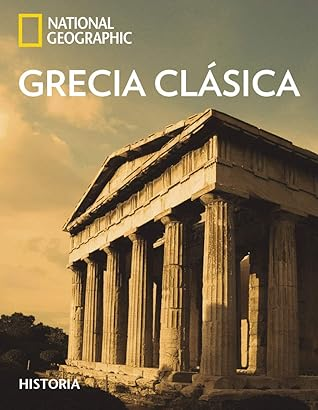

Grecia clásica
Reseña por Jorge I. Zuluaga

Ver detalles · Ver reseña en GoodReads (necesita cuenta)
Aunque no me considero un amante del género, he tenido ya la oportunidad de leer, con este, unos 3 o 4 libros enciclopédicos muy interesantes.
Mi balance hasta ahora, y "Grecia Clásica" ha jugado un papel central en esta conclusión, es que los libros enciclopédicos merecen mucha más atención y dedicación de la que les hemos dado hasta ahora.
Imagino que los autores y las autoras de estos textos, cuyos nombres no decoran las portadas o el inicio de los capítulos y se conforman con aparecer en letra muy pequeñita, perdida entre los créditos de las primeras páginas, estarán muy de acuerdo con este concepto. Solo por esas personas dedicadas y casi anónimas, ya valdría la pena dedicar muchas más horas a leer este tipo de libros.
National Geographic ha publicado varias colecciones enciclopédicas muy bien logradas, con colecciones de imágenes, ilustraciones, mapas y textos de historia de distintos tamaños y precios. Este libro hace parte de una de las colecciones con ejemplares más grandes y completos publicados por esta organización.
El libro tiene poco más de 400 páginas a tamaño doble carta, impresas en papel fino (como el que caracteriza a las enciclopedias decorativas). Está profusamente ilustrado con fotografías de lugares y objetos relacionados con la historia, lo que hace al libro increíblemente ameno. Como amante de los libros de historia, en todos sus formatos, es realmente un descanso —y esta fue la razón principal por la que me animé a leerlo— leer un libro ilustrado; no tener que estar interrumpiendo la lectura para buscar la imagen de un monumento, una escultura o un mapa.
El libro viene con una decena de mapas, intercalados entre los capítulos, que son increíblemente ilustrativos. Por la naturaleza particular de la historia política de Grecia, y también por su compleja geografía, es muy fácil perderse en el centenar de lugares, penínsulas, islas, golfos, ciudades, etc., en los que se desarrollaron los eventos más importantes de la milenaria historia de esta región del planeta. Por eso, la posibilidad de contar con mapas para orientarte en el laberinto minoico de la historia griega es muy importante.
Los textos del libro son profundos, están bien escritos, pero al mismo tiempo son fáciles de leer para quienes no somos expertos o expertas en historiografía.
Esto es quizás lo que más me ha sorprendido del género enciclopédico.
Es fácil pensar que un libro de consulta o de carácter más bien decorativo no tenga textos de valor académico o divulgativo. Pero los tiene y he sido muy feliz al descubrirlo. Tengo una decena de libros así en mi biblioteca que cada vez me animo más a leer.
Llegué a "Grecia clásica" primero atraído por la apariencia y tamaño del libro, además de porque no es muy caro y podía comprarlo. Son razones superficiales, pero quien no haya adquirido nunca un libro así, que lance la primera piedra. Tuve el libro en mi casa ganando polvo mientras adornaba un mueble. Esto fue hasta que leí "Viaje a la Grecia clásica" de Antonio Penadés, un excelente libro de viajes que inyectó en mí la suficiente curiosidad por la historia de Grecia como para animarme a meterle el diente a este libraco.
El resultado no pudo ser mejor.
El libro hace un recorrido por las etapas cruciales de la historia de Grecia: la edad de bronce, el período oscuro, la era arcaica y la Grecia Clásica —el siglo de oro o el siglo de Pericles—. Termina con el inicio del enfrentamiento de las polis griegas contra el reino macedónico, enfrentamientos que a la larga darían inicio al denominado período helenístico y posteriormente al período romano. Tan solo saber esto ya me hace sentir feliz. Como lo he comentado en otras reseñas, ya había leído otros textos de la historia de Grecia, pero el recorrido pormenorizado e ilustrado de este libro me permitió consolidar conceptos, cronologías y personajes.
El texto no se reduce a relatar los eventos históricos de cada período, sino que además ahonda, en páginas que se separan temporalmente del relato, en la vida cotidiana, el rol de las mujeres, la escultura y el arte griego, los ritos funerarios, la filosofía, la sofística, entre muchos otros temas.
Pero no hay que engañarse tampoco. Es una lectura que requiere paciencia.
Cada página de un libro enciclopédico puede corresponder a unas dos páginas de un libro convencional; por esto, la lectura de los 400 folios de este libro puede tomar el tiempo de un libro convencional de unas 600 páginas (hay muchas ilustraciones entre el texto, lo que aligera la lectura). Por otro lado, manipular un libro pesado como este también es más complicado; descarten desde ya llevarlo consigo para las filas en los bancos o los paseos. Pero vale la pena.
Todas las personas que vivimos en lo que se ha dado en conocer como Occidente, o que han sido influenciadas —por razones buenas o malas— por lo que se cocinó en el Mediterráneo hace entre 2000 y 3000 años, especialmente durante los siglos en los que Grecia vivió su esplendor, deberíamos conocer esta historia.